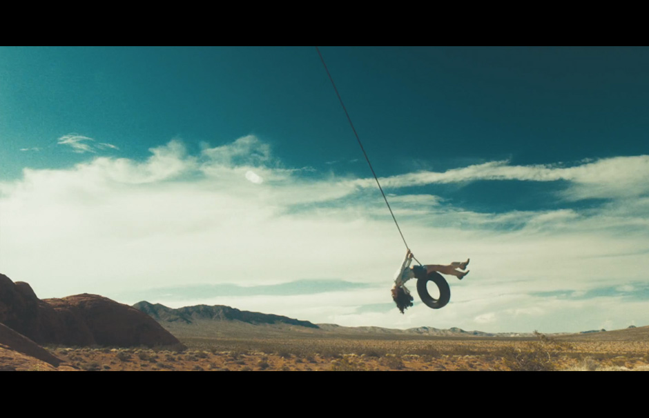

“I was in the winter of my life…and the men I met along the road were my homely summer. At night I fell asleep with visions of myself dancing and laughing and crying with them. Three years down the line of being on an endless road toward and my memories of them were the only things that sustained me…and my only real happy times. I was a singer…not a very popular one; I once had dreams of becoming a beautiful poet. But a plan and a series of unfortunate events saw those dreams dash and divide like a million stars in the night sky, that I wished on over and over again, sparkling and broken. But I didn’t really mind it because I knew that, that it takes getting everything you ever wanted and then losing it, to know what true freedom is. And when the people I used to know found out what I’d been doing, how I’d been living…they asked me why, but there’s no use in talking to people who have a home. They have no idea what it’s like to seek safety in other people…for a home to be wherever you lie your head. I was always an unusual girl. My mother told me I had a chameleon soul, no moral compass pointing due north, no fixed personality. Just a hint of indecisiveness that was just as wide and wavering as the ocean. And if I said I didn’t plan for it to turn out this way, I’d be lying…because I was born to be the other woman. I belonged to no one, who belonged to everyone. Who had nothing, who wanted everything. With a fire for every experience, and an obsession for freedom, that terrified me to the point that I couldn’t even talk about it. And pushed me to a nomadic point of madness that both dazzled and dizzied me. Every night I used to pray that I’d find my people. And finally I did, on the open road. We had nothing to lose, nothing to gain, nothing we desired anymore. Except to make our lives into a work of art. Live fast…die young…be wild and have fun. I believe in the country America used to be. I’ll believe in the person I want to become. I believe in the freedom of the open road. And my motto is the same as ever. I believe in the kindness in strangers. And when I’m at war with myself, I ride. I just ride. Who are you? Are in touch with all of your darkest fantasies? Have you created a life for yourself, where you can experience them? I have. I am fucking crazy. But I am free.”
Lana Del Ray
